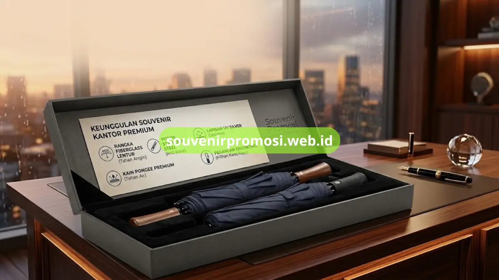

Poin Penting
- Material payung menentukan umur pakai dan visibilitas logo dalam jangka panjang.
- Rangka fiberglass lentur sehingga tidak patah saat angin kencang.
- Poros stainless steel tahan karat meski sering terkena hujan.
- Kain pongee premium tahan air, ringan, dan hasil cetak logo lebih tajam.
- Lapisan silver memberikan perlindungan UV, sementara handle karet/kayu menambah kenyamanan dan eksklusivitas.
Daftar Isi
Pendahuluan
Material payung lipat anti angin menentukan seberapa lama souvenir promosi tersebut dapat bertahan dan seberapa optimal logo perusahaan tetap terlihat baik dari waktu ke waktu. Payung yang cepat rusak, robek, atau baling saat tertiup angin justru berisiko menurunkan citra perusahaan yang membagikannya, sehingga pemilihan bahan bukan hal yang bisa dianggap remeh saat memesan souvenir dalam jumlah besar.
Souvenir Promosi menyeleksi setiap komponen payung lipat anti angin -- dari rangka, kain kanopi, hingga pegangan -- agar layak dijadikan merchandise korporat yang tahan pakai bertahun-tahun.
Rangka Fiberglass yang Lentur dan Tidak Mudah Patah
Rangka fiberglass menjadi komponen utama yang membuat payung lipat mampu menahan terpaan angin kencang tanpa patah, karena sifatnya yang lentur memungkinkan rangka melengkung sementara lalu kembali ke bentuk semula. Karakteristik ini berbeda dari rangka logam biasa yang cenderung bengkok permanen ketika tertekan angin dari arah berlawanan. Payung lipat anti angin yang dijual Souvenir Promosi menggunakan rangka fiberglass pada bagian ujung (rib) sebagai standar produksi.
Rangka Baja Anti Karat (Stainless Steel) pada Poros Utama
Bagian poros utama dan sambungan payung umumnya menggunakan baja anti karat atau stainless steel yang tahan terhadap kelembapan tanpa mudah berkarat meski sering terkena air hujan. Kombinasi poros stainless steel dengan rib fiberglass inilah yang menjadikan payung lipat anti angin lebih awet dibanding payung promosi dengan rangka besi konvensional. Souvenir Promosi memastikan setiap unit payung yang diproduksi menggunakan kombinasi material ini sebagai standar kualitas souvenir kantor.

Kain Kanopi Pongee Premium yang Tahan Air
Kain pongee premium dipilih sebagai bahan kanopi karena teksturnya yang rapat sehingga mampu menahan rembesan air sekaligus memberikan permukaan cetak logo yang halus dan tajam. Bahan ini juga lebih ringan dibanding kain kanopi tebal lainnya, sehingga payung tetap nyaman dibawa meski dalam ukuran besar seperti model golf lipat. Souvenir Promosi menggunakan kain pongee sebagai pilihan utama untuk hampir seluruh varian payung lipat anti angin di katalog.
Lapisan Silver untuk Perlindungan UV Ekstra
Sebagian model payung lipat anti angin dilengkapi lapisan silver di sisi dalam kanopi yang berfungsi memantulkan sinar matahari sehingga area di bawah payung terasa lebih sejuk. Lapisan ini juga membantu memperlambat pemudaran warna kain akibat paparan sinar UV dalam jangka panjang, menjaga tampilan logo tetap cerah meski payung sering digunakan di luar ruangan. Opsi lapis silver tersedia sebagai upgrade pada beberapa model payung di Souvenir Promosi.
Pegangan Ergonomis Berlapis Karet atau Kayu
Handle atau pegangan payung turut menentukan kenyamanan dan kesan eksklusif souvenir, terutama untuk model payung otomatis premium yang biasa diberikan kepada klien VIP. Lapisan karet pada pegangan memberi genggaman yang tidak licin, sementara pegangan berbahan kayu memberikan tampilan lebih elegan untuk souvenir kelas atas. Souvenir Promosi menyediakan kedua opsi handle ini sesuai kebutuhan segmentasi penerima souvenir perusahaan.
Percayakan Kualitas Material Souvenir Payung Anda pada Souvenir Promosi
Setiap material yang dijelaskan di atas -- rangka fiberglass, poros stainless steel, kain pongee, lapis silver UV, hingga handle ergonomis -- tersedia dalam satu paket produksi payung lipat anti angin di souvenirpromosi.web.id. Tim Souvenir Promosi siap menjelaskan spesifikasi lengkap tiap material sesuai kebutuhan dan budget pemesanan Anda.
Konsultasikan kebutuhan material souvenir payung perusahaan Anda sekarang melalui souvenirpromosi.web.id dan dapatkan sampel produk sebelum pemesanan grosir.